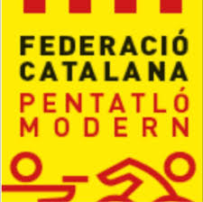

Experiència Laboral en Informàtica
2024/2025 - Telemarketing Golden Line
He realitzat les meves practiques a Goldenline com a tècnic de sistemes en pràctiques. El meu treball consisteix en tasques com la instal·lació i configuració de cables de xarxa, la creació d'imatges per a equips nous, la reparació de PC i la supervisió de diferents components del sistema. Aquestes experiències m'estan ajudant a aplicar els meus coneixements de SMX2 en un entorn real, aprendre a resoldre problemes tècnics i millorar a cada tasca.
Experiència Laboral General
2023/2024 - Professor particular
Classes de repàs a alumnes de l’ESO i Primària. Ajuda en els estudis.
2023/2024 - Federació Catalana de Pentatló
Organització d'actes varis. Tasques de muntatge/desmuntatge, distribució de treball.
